#233 · Symbol Pokémon
Unown
This Pokémon is shaped like ancient text characters. Although research is ongoing, it is a mystery as to which came first, the ancient writings or the various Unown.
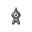
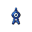
Base stats
- HP
- 48
- Attack
- 72
- Defense
- 48
- Sp. Atk
- 72
- Sp. Def
- 48
- Speed
- 48
- Total
- 336
- Height
- 0.5 m
- Weight
- 5 kg
- Catch rate
- 225 (Easy)
- Base EXP
- 118
- Effort values (EV)
- 1 Attack, 1 Sp. Atk
- Growth rate
- Med. Fast
- Base friendship
- 70
Abilities
- LevitateNot hit by Ground attacks.
Type defenses
How much damage Unown takes from moves of these types.
- ×2
- BugGhostDark
- ×½
- FightingPsychic
- With Levitate: no damage from Ground-type moves.
Evolution
Unown is not part of an evolution line.
Forms
Unown comes in 28 forms – one for each letter, plus “!” and “?”.
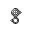
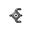
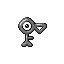
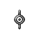
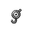
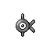
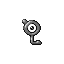
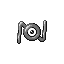
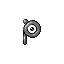
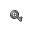
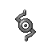
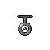
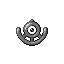
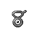
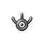
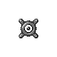
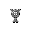
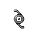
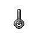
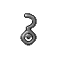
Moves
Level-up
| Lv. | Move | Type | Category | Power | Accuracy | PP |
|---|---|---|---|---|---|---|
| 1 | Hidden Power | Normal | 60 | 100 | 15 |
TM/HM
| TM/HM | Move | Type | Category | Power | Accuracy | PP |
|---|---|---|---|---|---|---|
| TM10 | Hidden Power | Normal | 60 | 100 | 15 |
Where to find it
Wild Pokémon
Levels and rates are the values the game uses. Times of day: Day 6 AM–7 PM, Night 7 PM–6 AM.
| Location | Region | Method | Time of day | Levels | Rate |
|---|---|---|---|---|---|
| Ruins of Alph | Johto | Cave | Any time | Lv. 45 | 100% |
| Ruins of Alph | Johto | Tall grass | Day | Lv. 45–46 | 10% |
| Ruins of Alph | Johto | Tall grass | Night | Lv. 45–46 | 30% |
Breeding
- Egg Groups
- ---
- Gender
- Genderless
Does not lay eggs.
Pokédex numbers
The number at the top of the page is the game's own (“National Dex”).
- National Dex
- No. 233
- Johto Pokédex
- No. 063
- Regional Pokédexes
- Johto
- Official National no.
- No. 201